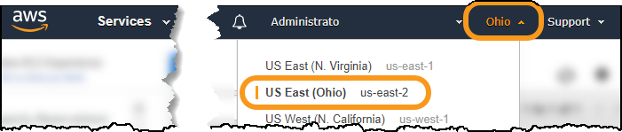
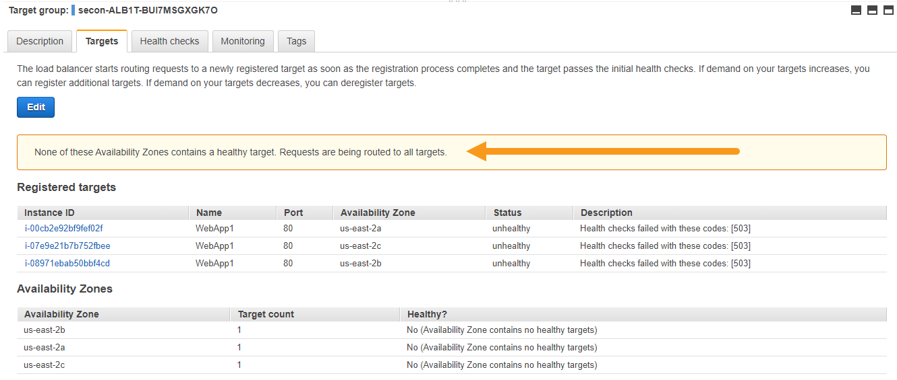

Level 300: Implementing Health Checks and Managing Dependencies to Improve Reliability
Author
- Seth Eliot, Reliability Lead, Well-Architected, AWS
Amazon Builders' Library and AWS Well-Architected
This lab illustrates best practices for reliability as described in the AWS Well-Architected Reliability pillar. It focuses on resiliency practices described in the Amazon Builders' Library article: Implementing health checks.
Table of Contents
- Deploy the application
- Handle failure of service dependencies
- Implement deep health checks
- Fail open when appropriate
- Tear down this lab
1. Deploy the application
You will create a multi-tier architecture using AWS and run a simple service on it. The service is a web server running on Amazon EC2 fronted by an Elastic Load Balancer reverse-proxy, with a dependency on Amazon DynamoDB.
Note: The concepts covered by this lab apply whether your service dependency is an AWS resource like Amazon DynamoDB, or an external service called via API. The DynamoDB dependency here acts as a mock for an external service called RecommendationService. The getRecommendation API on this service is a dependency for the web service used in this lab. getRecommendation is actually a get_item call to a DynamoDB table.

1.1 Log into the AWS console
If you are attending an in-person workshop and were provided with an AWS account by the instructor:
- Follow the instructions here for accessing your AWS account
If you are using your own AWS account:
- Sign in to the AWS Management Console as an IAM user who has PowerUserAccess or AdministratorAccess permissions, to ensure successful execution of this lab.
1.2 Deploy the application using an AWS CloudFormation template
You will deploy the service infrastructure including simple service code and some sample data.
- It is recommended that you use the Ohio region. This region is also known as us-east-2, which you will see referenced throughout this lab.

- If you choose to use a different region, you will need to ensure future steps are consistent with your region choice.
1.2.1 Deploy the VPC infrastructure
- If you are comfortable deploying a CloudFormation stack, then use the express steps listed immediately below.
- If you need additional guidance in how to deploy a CloudFormation stack, then follow the directions for the Automated Deployment of VPC lab, and then return here for the next step: 1.2.2 Deploy the web service infrastructure and service
Express Steps (Deploy the VPC infrastructure)
- Download the vpc-alb-app-db.yaml CloudFormation template
- Create a CloudFormation stack (with new resources) by uploading this CloudFormation Template file
- For Stack name use
WebApp1-VPC(case sensitive) - Leave all CloudFormation Parameters at their default values
- Click Next until the last page
- At the bottom of the page, select I acknowledge that AWS CloudFormation might create IAM resources with custom names
- Click Create stack
1.2.2 Deploy the web app infrastructure and service
Wait until the VPC CloudFormation stack status is CREATE_COMPLETE, then continue. This will take about four minutes.
- If you are comfortable deploying a CloudFormation stack, then use the express steps listed immediately below.
- If you need additional guidance in how to deploy a CloudFormation stack, then follow the directions for the Create an AWS CloudFormation Stack from a template lab, and then return here for the next step: 1.3 View the website for web service
Express Steps (Deploy the WebApp infrastructure and service)
- Download the staticwebapp.yaml CloudFormation template
- Create a CloudFormation stack (with new resources) by uploading this CloudFormation Template file
- For Stack name use
HealthCheckLab - Leave all CloudFormation Parameters at their default values
- Click Next until the last page
- At the bottom of the page, select I acknowledge that AWS CloudFormation might create IAM resources with custom names
- Click Create stack
1.3 View the website for web service
-
Go to the AWS CloudFormation console at https://console.aws.amazon.com/cloudformation.
- Wait until HealthCheckLab stack status is CREATE_COMPLETE before proceeding. This should take about four minutes
- Click on the HealthCheckLab stack
- Click on the Outputs tab
- For the Key WebsiteURL copy the value. This is the URL of your test web service
- Hint: it will start with
http://healt-alband end in<aws region>.elb.amazonaws.com
- Hint: it will start with
-
Click the URL and it will bring up the website:

-
The website simulates a recommendation engine making personalized suggestions for classic television shows. You should note the following features:
- Area A shows the personalized recommendation
- It shows first name of the user and the show that was recommended
- The workshop simulation is simple. On every request it chooses a user at random, and shows a recommendation statically mapped to that user. The user names, television show names, and this mapping are in a DynamoDB table, which is simulating the RecommendationService
- Area B shows metadata which is useful to you during the lab
- The instance_id and availability_zone enable you to see which EC2 server and Availability Zone were used for each request
- There is one EC2 instance deployed per Availability Zone
- Refresh the website several times, note that the EC2 instance and Availability Zone change from among the three available
- This is Elastic Load Balancing (ELB) distributing these stateless requests among the available EC2 server instances across Availability Zones
Well-Architected for Reliability: Best practices Use highly available network connectivity for your workload public endpoints: Elastic Load Balancing provides load balancing across Availability Zones, performs Layer 4 (TCP) or Layer 7 (http/https) routing, integrates with AWS WAF, and integrates with AWS Auto Scaling to help create a self-healing infrastructure and absorb increases in traffic while releasing resources when traffic decreases. Implement loosely coupled dependencies: Dependencies such as queuing systems, streaming systems, workflows, and load balancers are loosely coupled. Loose coupling helps isolate behavior of a component from other components that depend on it, increasing resiliency and agility. Deploy the workload to multiple locations: Distribute workload data and resources across multiple Availability Zones or, where necessary, across AWS Regions. These locations can be as diverse as required. - Area A shows the personalized recommendation
2. Handle failure of service dependencies
2.1 System dependency initially healthy
- You already observed that all three EC2 instances are successfully serving requests
- In a new tab navigate to ELB Target Groups console
- By clicking here to open the AWS Management Console
- or navigating through the AWS Management Console: Services > EC2 > Load Balancing > Target Groups
- Leave this tab open as you will be referring back to it multiple times
- Click on the Targets tab (bottom half of screen)
- Under Registered Targets observe the three EC2 instances serving your web service
-
Note that they are all healthy (see Status and Description)
- In this state the ELB will route traffic to any of the three servers

-
From the Target Groups console, now click on the the Health checks tab
- Note here that the Path is configured to
/healthcheck
- Note here that the Path is configured to
-
Copy the URL of the web service to a new tab and append
/healthcheckto the end of the URL-
The new URL should look like:
http://healt-alb1l-<...>.elb.amazonaws.com/healthcheck -
Refresh several times and observe the health check on the three servers
- Note the check is successful
-
-
The EC2 servers receive user requests (for a TV show recommendation) on the path
/and they receive health check requests from the Elastic Load Balancer on the path/healthcheck- The health check always returns an http 200 code for any request to it.
- The server code running on each EC2 instance can be viewed here, or you can view the health check code excerpt below:
Click here to see the health check code excerpt
# Healthcheck request - will be used by the Elastic Load Balancer
elif self.path == '/healthcheck':
# Return a healthy code
self.send_response(200)
self.send_header('Content-type', 'text/html')
self.end_headers()
2.2 Simulate dependency not available
2.2.1 Disable RecommendationService
You will now simulate a complete failure of the RecommendationService. Every request in turn makes a (simulated) call to the getRecommendation API on this service. These will all fail for every request on every server.
- In a new tab, navigate to the Parameter Store on the AWS Systems Manager console
- By clicking here to open the AWS Management Console
- or navigating through the AWS Management Console: Services > Systems Manager > Parameter Store
- Leave this tab open as you will be referring back to it one additional time
- Click on RecommendationServiceEnabled
- Click Edit
- In the Value box, type false
- Click Save Changes
- A status message should say Edit parameter request succeeded
The RecommendationServiceEnabled parameter is used only for this lab. The server code reads its value, and simulates a failure in RecommendationService (all reads to the DynamoDB table simulating the service will fail) when it is false.
2.2.2 Observe behavior when dependency not available
- Refresh the test web service multiple times
- Note that it fails with 502 Bad Gateway
- For each request one of the servers receiving the request attempts to call the RecommendationService but catastrophically fails and fails to return a reply (empty reply) to the load balancer, which in turn presents this as a http 502 failure.
- You can observe this by opening a new tab and navigating to ELB Load Balancers console:
- By clicking here to open the AWS Management Console
- or navigating through the AWS Management Console: Services > EC2 > Load Balancing > Load Balancers
-
Click on the Monitoring tab (bottom half of screen)
- Observe the ELB 5XXs (Count) and HTTP 502s (Count) errors for the load balancer
- It will take a minute for the metrics to show up. Make sure you refresh the web service page multiple times in your browser
- These are the error codes the load balancer returns on every request during this simulated outage

-
Compare these metrics to those for the target group (the EC2 servers themselves)
- Return to the Target Groups console and click the Monitoring tab there
- Observe HTTP 5XXs ( Count ) errors shows no data
- The servers themselves are not returning actual http error codes, they are failing to return any data at all

- We need to update the server code to handle when the dependency is not available
2.3 Update server code to handle dependency not available
The getRecommendation API is actually a get_item call on a DynamoDB table. Examine the server code to see how errors are currently handled
- The server code running on each EC2 instance can be viewed here
-
Search for the call to the RecommendationService. It looks like this:
response = call_getRecommendation(self.region, user_id)- What happens if this call fails?
- Choose one of the options below (Option 1 - Expert or Option 2 - Assisted) to improve the code and handle the failure
2.3.1 Option 1 - Expert option: make and deploy your changes to the code
You may choose this option, or skip to Option 2 - Assisted option
This option requires you have access to place a file in a location accessible via https/https via a URL. For example a public readable S3 bucket, gist (use the raw option to get the URL), or your private webserver.
- Download the existing server code from here: server_basic.py
- Modify the code to handle the call to the RecommendationService
- When the call to RecommendationService fails then instead of using the response data you requested and did not get, return a static response:
- Instead of user first name return Valued Customer
- Instead of a personalized recommended TV show, return I Love Lucy
- Try to also return some diagnostic information on the cause of the error
- Put your updated server code in a location where it can be downloaded via its URL using wget
- In the AWS Console go the HealthCheckLab CloudFormation stack and Update it:
- Leave Use current template selected and click Next
- Find the ServerCodeUrl parameter and enter the URL for your new code
- When stack status is CREATE_COMPLETE (about four minutes) then continue
If you completed the Option 1 - Expert option, then skip the Option 2 - Assisted option section and continue with 2.3.3 Error handling code
2.3.2 Option 2 - Assisted option: deploy workshop provided code
- The new server code including error handling can be viewed here
- Search for
Error handlingin the comments (occurs twice). What will this code do now if the dependency call fails?
Deploy the new error handling code
- Navigate to the AWS CloudFormation console
- Click on the HealthCheckLab stack
- Click Update
- Leave Use current template selected and click Next
-
Find the ServerCodeUrl parameter and enter the following:
https://aws-well-architected-labs-ohio.s3.us-east-2.amazonaws.com/Healthcheck/Code/server_errorhandling.py -
Click Next until the last page
- At the bottom of the page, select I acknowledge that AWS CloudFormation might create IAM resources with custom names
- Click Update stack
- Click on Events, and click the refresh icon to observe the stack progress
- New EC2 instances running the error handling code are being deployed
- When stack status is CREATE_COMPLETE (about four minutes) then continue
2.3.3 Error handling code
This is the error handling code from server_errorhandling.py. The Option 2 - Assisted option uses this code. If you used the Option 1 - Expert option, you can consult this code as a guide.
Click here to see code
# Error handling:
# surround the call to RecommendationService in a try catch
try:
# Call the getRecommendation API on the RecommendationService
response = call_getRecommendation(self.region, user_id)
# Parses value of recommendation from DynamoDB JSON return value
# {'Item': {
# 'ServiceAPI': {'S': 'getRecommendation'},
# 'UserID': {'N': '1'},
# 'Result': {'S': 'M*A*S*H'}, ...
tv_show = response['Item']['Result']['S']
user_name = response['Item']['UserName']['S']
message += recommendation_message (user_name, tv_show, True)
# Error handling:
# If the service dependency fails, and we cannot make a personalized recommendation
# then give a pre-selected (static) recommendation
# and report diagnostic information
except Exception as e:
message += recommendation_message ('Valued Customer', 'I Love Lucy', False)
message += '<br><br><br><h2>Diagnostic Info:</h2>'
message += '<br>We are unable to provide personalized recommendations'
message += '<br>If this persists, please report the following info to us:'
message += str(traceback.format_exception_only(e.__class__, e))
2.3.4 Observe behavior of web service with added error handling
-
After the new error-handling code has successfully deployed, refresh the test web service page multiple times. Observe:
- It works. It no longer returns an error
- All three EC2 instances and Availability Zones are being used
- A default recommendation for Valued Customer is displayed instead of a user-personalized one
- There is now Diagnostic Info. What does it mean?
-
Refer back to the newly deployed code to understand why the website behaves this way now
The Website is working again, but in a degraded capacity since it is no longer serving personalized recommendations. While this is less than ideal, it is much better than when it was failing with http 502 errors. The RecommendationService is not available, so the app instead returns a static response (the default recommendation) instead of the data it would have obtained from RecommendationService.
| Well-Architected for Reliability: Best practice |
|---|
| Implement graceful degradation to transform applicable hard dependencies into soft dependencies: When a component's dependencies are unhealthy, the component itself can still function, although in a degraded manner. For example, when a dependency call fails, instead use a predetermined static response. |
3. Implement deep health checks
3.1 Re-enable the dependency service
For the next part of the lab restore access to the getRecommendation API on the RecommendationService
- Return to the AWS Systems Manager > Parameter Store on the AWS Management Console
- Set the value of RecommendationServiceEnabled back to true and Save changes
- Confirm the web service is now returning "personalized" recommendations again
3.2 Inject fault on a single server
Previously you simulated a failure of the service dependency. Now you will simulate a failure on a single server (of the three servers running). You will simulate a fault on this server that prevents only it from calling the otherwise healthy service dependency.
- Navigate to the EC2 Instances console
- There should be three EC2 instances with Instance State running, one in each Availability Zone (they will have Name WebApp1)
- Click the gear icon in the upper-right and select IAM Instance Profile Name (in addition to what is already selected)
- Select only the EC2 instance in Availability Zone us-east-2c
- Click Action > Instance Settings > Attach/Replace IAM Role
-
From IAM role, click WebApp1-EC2-noDDB-Role-HealthCheckLab

-
Click Apply
- Click Close
- This will return you to the EC2 Instances console. Observe under IAM Instance Profile Name (it is one of the displayed columns) which IAM roles each EC2 instance has attached
The IAM role attached to an EC2 instance determines what permissions it has to access AWS resources. You changed the role of the us-east-2c instance to one that is almost the same as the other two, except it does not have access to DynamoDB. Since DynamoDB is used to mock our service dependency, the us-east-2c server no longer has access to the service dependency (RecommendationService). Stale credentials is an actual fault that servers might experience. Your actions above simulate stale (invalid) credentials on the us-east-2c server.
3.4 Observe application behavior and determine how to fix it
- Observe the website behavior now
- Refresh the website multiple times noting which Availability Zone the serving the request
- The servers in us-east-2a and us-east-2b continue to function normally
- The server in us-east-2c still succeeds, but it uses the static response. Why is this?
- The service dependency RecommendationServiceEnabled is still healthy
- It is the server in us-east-2c that is unhealthy - it has stale credentials
- Return to the Target Groups and under the Targets tab observe the results of the ELB health checks
- They are all Status healthy, and are therefore all receiving traffic. Why does the server in us-east-2c show healthy for this check?
-
The service would deliver a better experience if it:
- Identified the us-east-2c server as unhealthy and did not route traffic to it
- Replaced this server with a healthy one
Well-Architected for Reliability: Best practices Make services stateless where possible: Services should either not require state, or should offload state such that between different client requests, there is no dependence on locally stored data on disk or in memory. This enables servers to be replaced at will without causing an availability impact. Amazon ElastiCache or Amazon DynamoDB are good destinations for offloaded state. Automate healing on all layers: Upon detection of a failure, use automated capabilities to perform actions to remediate. Ability to restart is an important tool to remediate failures. As discussed previously for distributed systems, a best practice is to make services stateless where possible. This prevents loss of data or availability on restart. In the cloud, you can (and generally should) replace the entire resource (for example, EC2 instance, or Lambda function) as part of the restart. The restart itself is a simple and reliable way to recover from failure. Many different types of failures occur in workloads. Failures can occur in hardware, software, communications, and operations. Rather than constructing novel mechanisms to trap, identify, and correct each of the different types of failures, map many different categories of failures to the same recovery strategy. An instance might fail due to hardware failure, an operating system bug, memory leak, or other causes. Rather than building custom remediation for each situation, treat any of them as an instance failure. Terminate the instance, and allow AWS Auto Scaling to replace it. Later, carry out the analysis on the failed resource out of band. -
From the Target Groups console click on the the Health checks tab
- The ELB health check is configured to return healthy when it receives an http 200 response on the
/healthcheckpath - Since the healthcheck code simply always returns http 200, the bad server still returns http 200 and is seen as healthy.
- The ELB health check is configured to return healthy when it receives an http 200 response on the
3.4 Create a deep healthcheck to identify bad servers
- Update server code to add a deep health check response
- You will create and configure a new health check that will include a check on whether the server can access its dependency
- This is a deep health check -- it checks the actual function of the server including the ability to call service dependencies
- This will be implemented by updating the server code on the
/healthcheckpath
Choose one of the options below (Option 1 - Expert or Option 2 - Assisted) to improve the code and add the deep health check.
3.4.1 Option 1 - Expert option: make and deploy your changes to the code
You may choose this option, or skip to Option 2 - Assisted option
This option requires you have access to place a file in a location accessible via https/https via a URL. For example a public readable S3 bucket, gist (use the raw option to get the URL), or your private webserver.
- Start the existing server code that you added error handling to, or alternatively download the lab sample code from here: server_errorhandling.py
- Calls to
/healthcheckshould in turn make a test call to RecommendationService using User ID 0- If the RecommendationService returns the string test for both Result and UserName then it is healthy
- If it is healthy then return http code 200 (OK)
- If it is not healthy then return http code 503 (Service Unavailable)
- Also return the same EC2 meta-data that is returned on the call to the
/path
- Put your updated server code in a location where it can be downloaded via its URL using wget
- In the AWS Console go the HealthCheckLab CloudFormation stack and Update it:
- Leave Use current template selected and click Next
- Find the ServerCodeUrl parameter and enter the URL for your new code
- When stack status is CREATE_COMPLETE (about four minutes) then continue
If you completed the Option 1 - Expert option, then skip the Option 2 - Assisted option section and continue with 3.4.3 Health check code
3.4.2 Option 2 - Assisted option: deploy workshop provided code
- The new server code including error handling can be viewed here
- Search for
Healthcheck requestin the comments. What will this code do now if called on this health check URL?
Deploy the new health check code
- Navigate to the AWS CloudFormation console
- Click on the HealthCheckLab stack
- Click Update
- Leave Use current template selected and click Next
-
Find the ServerCodeUrl parameter and enter the following:
https://aws-well-architected-labs-ohio.s3.us-east-2.amazonaws.com/Healthcheck/Code/server_healthcheck.py -
Click Next until the last page
- At the bottom of the page, select I acknowledge that AWS CloudFormation might create IAM resources with custom names
- Click Update stack
- Click on Events, and click the refresh icon to observe the stack progress
- New EC2 instances running the error handling code are being deployed
- When stack status is CREATE_COMPLETE (about four minutes) then continue
3.4.3 Health check code
This is the health check code from server_healthcheck.py. The Option 2 - Assisted option uses this code. If you used the Option 1 - Expert option, you can consult this code as a guide.
Click here to see code
# Healthcheck request - will be used by the Elastic Load Balancer
elif self.path == '/healthcheck':
is_healthy = False
error_msg = ''
TEST = 'test'
# Make a request to RecommendationService using a predefined
# test call as part of health assessment for this server
try:
# call RecommendationService using the test user
user_id = str(0)
response = call_getRecommendation(self.region, user_id)
# Parses value of recommendation from DynamoDB JSON return value
tv_show = response['Item']['Result']['S']
user_name = response['Item']['UserName']['S']
# Server is healthy of RecommendationService returned the expected response
is_healthy = (tv_show == TEST) and (user_name == TEST)
# If the service dependency fails, capture diagnostic info
except Exception as e:
error_msg += str(traceback.format_exception_only(e.__class__, e))
# Based on the health assessment
# If it succeeded return a healthy code
# If it failed return a server failure code
message = ""
if (is_healthy):
self.send_response(200)
self.send_header('Content-type', 'text/html')
self.end_headers()
message += "<h1>Success</h1>"
# Add metadata
message += get_metadata()
else:
self.send_response(503)
self.send_header('Content-type', 'text/html')
self.end_headers()
message += "<h1>Fail</h1>"
message += "<h3>Error message:</h3>"
message += error_msg
# Add metadata
message += get_metadata()
self.wfile.write(
bytes(
html.format(Title="healthcheck", Content=message),
"utf-8"
)
)
3.4.4 Verify Elastic Load Balancer (ELB) is configured to use the new deep health check
- From the Target Groups console click on the the Health checks tab
- For Path verify the value is
/healthcheck - Click the Targets tab so you can monitor health check status
3.4.5 Observe behavior of web service with added deep health check
- Continue the lab after the HealthCheckLab CloudFormation stack is complete.
The CloudFormation stack update reset the EC2 instance IAM roles, so the system is back to its original no-fault state. You will re-introduce the single-server fault and observe the new behavior.
- Refresh the web service multiple times and note all three servers are functioning without error
-
Copy the URL of the web service to a new tab and append
/healthcheckto the end of the URL-
The new URL should look like:
http://healt-alb1l-<...>.elb.amazonaws.com/healthcheck -
Refresh several times and observe the health check on the three servers
- Note the check is successful - the check now includes a call to the RecommendationService (the DynamoDB table)
- Go to the Target Groups console click on the Targets tab and note the health status as per the ELB health checks.
- To re-introduce the stale credentials fault, again change the IAM role for the EC2 instance in us-east-2c to WebApp1-EC2-noDDB-Role-HealthCheckLab
- See 3.2 Inject fault on one of the servers if you need a reminder of how to do this.
- Go to the Target Groups console click on the Targets tab and note the health status as per the ELB health checks (remember to refresh)
- Note that the server in us-east-2c is now failing the health check with a http code 503 Service Not Available
- With an Interval of 15 seconds, and a Healthy threshold of 2, it can take up to 30 seconds to see the status update.
- The ELB has identified the us-east-2c server as unhealthy and will not route traffic to it
-
This is known as fail-closed behavior

-
-
Refresh the web service multiple times and note it is however still functioning without error
- And unlike before it is no longer returning a static response - it only returns personalized recommendations
- Note that only the servers in us-east-2a and us-east-2b are serving requests
Well-Architected for Reliability: Best practices Monitor all components of the workload to detect failures: Continuously monitor the health of your workload so that you and your automated systems are aware of degradation or complete failure as soon as they occur. Failover to healthy resources: Ensure that if a resource failure occurs, that healthy resources can continue to serve requests. Well-Architected for Reliability: Health Checks The load balancer will only route traffic to healthy application instances. The health check needs to be at the data plane/application layer indicating the capability of the application on the instance. This check should not be against the control plane. A health check URL for the web application will be present and configured for use by the load balancer
Repair the server
- Navigate to the EC2 Instances console and select only the instance in us-east-2c
- Click Action > Instance State > Terminate
- Click Yes, Terminate
- The EC2 instance will shut down
- Amazon EC2 Auto Scaling will recognize there are less then the three Desired Capacity and will start up a new EC2 instance
- The new instance replaces the one with the stale credentials fault, and loads fresh credentials
- From the Target Groups console Targets tab note the health check status of the new server in us-east-2c
- The new instance in us-east-2c will first show Description Target registration is in progress
- Then Description is This target is currently passing target group's health checks, then you may continue the workshop
- (The Description may show Health checks failed with these codes: [502], before getting to a healthy state. This is expected as the server initializes)
- From the time you terminate the EC2 instance, it will take four to five minutes to get the new EC2 instance up and in a healthy state
- Refresh the web service multiple times and note that personalized recommendations are once again being served from all three servers
4. Fail open when appropriate
4.1 Disable RecommendationService again
- Confirm the service is healthy
- Refresh the web service multiple times and note that personalized recommendations are being served from all three servers
- You will now simulate another complete failure of the RecommendationService. Every request will fail for every request on every server
- Return to the AWS Systems Manager > Parameter Store on the AWS Management Console
- Set the value of RecommendationServiceEnabled once again to false and Save changes
What is the expected behavior? The previous time you simulated a complete failure of the RecommendationService
- The web service failed with a http 502 error
- Then you implemented error handling and the following were observed
- The service returned a static response (as per the error handling code)
- Since the healthcheck code at that time was configured to only return http 200, it reported healthy status for all servers
Now, with the new deep health check in place...
- What status do you expect the elastic load balancer to report for the servers?
- How will the AWS Elastic Load Balancer handle traffic routing to the servers?
4.2 Observe fail-open behavior
- Refresh the web service multiple times
- Look at which servers (and Availability Zones) are serving requests
- Note that the service does not fail
- But as expected (without access to RecommendationServiceEnabled) it always serves static responses
- Refresh the health check URL multiple times
- The deep health detects that RecommendationServiceEnabled is not available and returns a failure code for all servers
-
From the Target Groups console Targets tab note the health check status of all the servers (you may need ot refresh)
- They all report unhealthy with http code 503. This is the code the deep health check is configured to return when the dependency is not available
-
Note the message at the top of the tab (if you do not see a message, try refreshing the entire page using the browser refresh function)

The Amazon Builders' Library: Implementing health checks When an individual server fails a health check, the load balancer stops sending it traffic. But when all servers fail health checks at the same time, the load balancer fails open, allowing traffic to all servers. When we rely on fail-open behavior, we make sure to test the failure modes of the dependency heath check.
A system set to fail-open does not shut down when failure conditions are present. Instead, the system remains “open” and operations continue. The AWS Application Load Balancer here exhibits this fail-open behavior and the service continues to serve requests sent to it by the load balancer.
-
Reset the value of RecommendationServiceEnabled to true and observe that the service resumes serving personalized recommendations.
- The RecommendationServiceEnabled parameter was initially intended to simulate the failure of RecommendationService for this lab
- But now that we have implemented fail-open behavior and graceful degradation we could use the RecommendationServiceEnabled parameter as an emergency lever to cuto-off traffic to RecommendationService if there was a serious problem with it.
Well-Architected for Reliability: Best practice Implement emergency levers: These are rapid processes that may mitigate availability impact on your workload. They can be operated in the absence of a root cause. An ideal emergency lever reduces the cognitive burden on the resolvers to zero by providing fully deterministic activation and deactivation criteria. Example levers include blocking all robot traffic or serving a static response. Levers are often manual, but they can also be automated.
5. Tear down this lab
If you are attending an in-person workshop and were provided with an AWS account by the instructor:
- There is no need to tear down the lab. Feel free to continue exploring. Log out of your AWS account when done.
If you are using your own AWS account:
- You may leave these resources deployed for as long as you want. When you are ready to delete these resources, see the following instructions
Remove AWS CloudFormation provisioned resources
How to delete an AWS CloudFormation stack
If you are already familiar with how to delete an AWS CloudFormation stack, then skip to the next section: Delete workshop CloudFormation stacks
- Go to the AWS CloudFormation console: https://console.aws.amazon.com/cloudformation
- Select the CloudFormation stack to delete and click Delete
- In the confirmation dialog, click Delete stack
- The Status changes to DELETE_IN_PROGRESS
- Click the refresh button to update and status will ultimately progress to DELETE_COMPLETE
- When complete, the stack will no longer be displayed. To see deleted stacks use the drop down next to the Filter text box.
- To see progress during stack deletion
- Click the stack name
- Select the Events column
- Refresh to see new events
Delete workshop CloudFormation stacks
- First delete the HealthCheckLab CloudFormation stack
- Wait for the HealthCheckLab CloudFormation stack to complete (it will no longer be shown on the list of actice stacks)
- Then delete the WebApp1-VPC CloudFormation stack
Remove CloudWatch logs
After deletion of the WebApp1-VPC CloudFormation stack is complete then delete the CloudWatch Logs:
- Open the CloudFormation console at https://console.aws.amazon.com/cloudwatch/.
- Click Logs in the left navigation.
- Click the radio button on the left of the WebApp1-VPC-VPCFlowLogGroup-\<some unique ID>.
- Click the Actions Button then click Delete Log Group.
- Verify the log group name then click Yes, Delete.
References & useful resources
- Patterns for Resilient Architecture — Part 3
- Amazon Builders' Library: Implementing health checks
- Well-Architected Framework (see the Reliability pillar)
- Well-Architected best practices for reliability
- Health Checks for Your Target Groups (for your Application Load Balancer)
License
Documentation License
Licensed under the Creative Commons Share Alike 4.0 license.
Code License
Licensed under the Apache 2.0 and MITnoAttr License.
Copyright 2020 Amazon.com, Inc. or its affiliates. All Rights Reserved.
Licensed under the Apache License, Version 2.0 (the "License"). You may not use this file except in compliance with the License. A copy of the License is located at
https://aws.amazon.com/apache2.0/
or in the "license" file accompanying this file. This file is distributed on an "AS IS" BASIS, WITHOUT WARRANTIES OR CONDITIONS OF ANY KIND, either express or implied. See the License for the specific language governing permissions and limitations under the License.